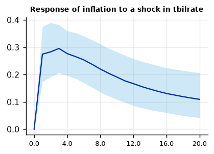
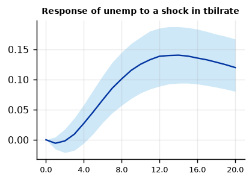
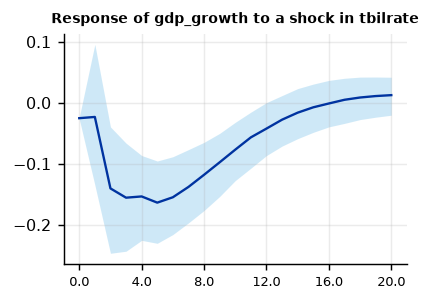
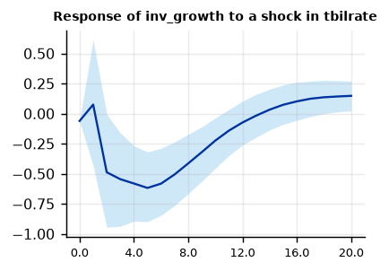

Run this model on your own data in Open Econometric Systems →
Step 1The question and the model
Does a small monetary VAR omit information that matters? A VAR in inflation, unemployment and the interest rate has the price puzzle: inflation rises after a tightening. One explanation is that the central bank sees far more than three series, and the VAR leaves that information in the residual. A factor-augmented VAR (Bernanke, Boivin and Eliasz 2005) adds a few unobserved factors \(F_t\) that summarise a large panel \(X_t\) of \(N\) informational series:
where \(Y_t\) are the observed variables (here inflation, unemployment and the policy rate, ordered last). Two things follow from the first equation. The factors enter the VAR, so the policy shock is identified with more information in the system. And every series in \(X_t\) has an impulse response, \(\Lambda' \times\) the VAR response, so you can report the effect of the shock on dozens of series without estimating a dozen VARs.
OES implements the two-step estimator: the factors are the principal components of the standardised panel, and the VAR on \((F_t, Y_t)\) is a Bayesian VAR with the Minnesota-type priors of the BVAR guide, with prior mean zero on the factors.
What this example is, and is not
The example panel has only six series, all real-activity growth rates from the same national accounts. A real FAVAR uses 50 to 150 series (the McCracken-Ng FRED-QD data are the standard source) with prices, interest rates, employment, financial and monetary variables. With six series the factors can say little that the three observed variables do not already say, and the guide shows this honestly in Step 8. Use this guide for the mechanics and diagnostics, and bring a large panel to your own application. The OES page accepts any number of series.
How to write it: the model
We estimate a factor-augmented VAR (Bernanke, Boivin and Eliasz 2005). The informational panel, \(N\) quarterly series standardised to mean zero and variance one, is summarised by \(K\) principal components. The factors, together with inflation, unemployment and the Treasury bill rate, enter a VAR(\(p\)) estimated with a Normal-Wishart prior with Minnesota moments (Litterman 1986), with prior mean zero for the factors and for stationary variables and one for the variables with a unit root. The policy shock is the innovation to the Treasury bill rate, identified recursively with the rate ordered last. Responses of the panel series are obtained from their estimated loadings on the factors and the observed variables.
Step 2Load the data and test for unit roots
import numpy as np
import pandas as pd
import oes_engine as oes # pip install -e open-econometric-systems/oes-engine
data = open("us_macro.csv").read()
y = ["inflation", "unemp", "tbilrate"] # observed variables, policy rate last
x = ["gdp_growth", "cons_growth", "inv_growth", "gov_growth", "income_growth", "m1_growth"] # information set
spec = dict(y=y, x=x, time="date", factors=2, lags=4, delta="0, 1, 1")
r = oes.run("favar", data, spec)
oes.summary(r)
oes.show(r, "Unit-root")Observations: 198
Factors: 2
Informational series: 6
Variance explained: 0.605
Prior: Normal-Wishart
Unit-root tests
ADF level, constant: p ADF level, trend: p ADF first difference: p KPSS level: p Conclusion
Variable
inflation 0.0271 0.0822 0.0000 0.0808 I(0)
unemp 0.1107 0.3084 0.0008 0.1000 I(1)
tbilrate 0.2805 0.4462 0.0000 0.0538 I(1)
gdp_growth 0.0000 0.0000 0.0000 0.1000 I(0)
cons_growth 0.0000 0.0001 0.0000 0.1000 I(0)
inv_growth 0.0000 0.0000 0.0000 0.1000 I(0)
gov_growth 0.0006 0.0043 0.0000 0.1000 I(0)
income_growth 0.0000 0.0000 0.0000 0.0298 I(0)
m1_growth 0.0023 0.0122 0.0000 0.1000 I(0)
Note: ADF H0: unit root; KPSS H0: stationary (p-values are truncated at 0.01 and 0.10). For a Minnesota-type prior use a prior mean of 1 on the own first lag for I(1) variables in levels (random walk) and 0 for stationary variables. A VAR in levels with a random-walk prior remains valid when the variables are I(1) or cointegrated (Sims, Stock and Watson 1990).How to read it
The principal components do not need stationary data, but they behave well when the panel is stationary, which is why informational series are transformed to growth rates or differences. All six series reject a unit root. Of the observed variables, inflation rejects (ADF p = 0.03), but unemployment and the T-bill rate do not, so they get a random-walk prior (delta = "0, 1, 1"). The factors are standardised and stationary, so they get zero.
Step 3Choose the number of factors
oes.show(r, "Number of factors")Number of factors: Bai and Ng (2002) IC_p2
IC_p2 (lower is better) Cumulative variance share
Factors
1 -0.2380 0.418
2 -0.3193 0.605
3 -0.5670 0.773
4 -1.0260 0.895
5 -3.1155 0.990
Note: The criterion prefers 5 factor(s); the model uses 2.How to read it
Two tools: the cumulative share of variance, and the Bai and Ng (2002) information criterion, which finds the number of factors in a large panel. It needs a large \(N\) and \(T\); with \(N = 6\) it is not informative (it keeps falling up to the maximum of five factors, which is nearly the whole panel). In a real application, \(N \ge 50\) and you would choose with the criterion and a scree plot, then check that the results do not depend on the choice (Step 8). Here two factors explain 61% of the variance of the six series, which is what the model uses.
Step 4The factors and the VAR
oes.show(r, "Principal-component")
oes.show(r, "Equation: tbilrate")Principal-component factors
Share of variance Cumulative
Factor
F1 0.4176 0.4176
F2 0.1876 0.6052
Equation: tbilrate
Mean Std. dev. 2.5% Median 97.5% P(> 0)
Parameter
const 0.1629 0.2757 -0.3705 0.1553 0.7032 0.709
L1.F1 -0.0337 0.0375 -0.1047 -0.0335 0.0397 0.180
L1.F2 -0.0545 0.0497 -0.1537 -0.0538 0.0403 0.135
L1.inflation 0.0073 0.0205 -0.0321 0.0075 0.0482 0.637
L1.unemp -0.1527 0.1443 -0.4243 -0.1558 0.1541 0.141
L1.tbilrate 0.9426 0.0494 0.8482 0.9432 1.0385 1.000
L2.F1 -0.0068 0.0247 -0.0565 -0.0060 0.0410 0.389
L2.F2 -0.0138 0.0350 -0.0848 -0.0136 0.0545 0.356
L2.inflation 0.0183 0.0146 -0.0094 0.0183 0.0457 0.894
L2.unemp 0.0711 0.1439 -0.2212 0.0795 0.3531 0.687
L2.tbilrate -0.0272 0.0414 -0.1064 -0.0274 0.0562 0.248
L3.F1 -0.0042 0.0176 -0.0379 -0.0040 0.0300 0.403
L3.F2 -0.0037 0.0263 -0.0545 -0.0033 0.0462 0.446
L3.inflation 0.0148 0.0113 -0.0076 0.0149 0.0374 0.912
L3.unemp 0.0230 0.0993 -0.1714 0.0227 0.2164 0.608
L3.tbilrate 0.0262 0.0301 -0.0333 0.0263 0.0847 0.817
L4.F1 -0.0011 0.0143 -0.0295 -0.0004 0.0250 0.493
L4.F2 -0.0059 0.0203 -0.0446 -0.0058 0.0314 0.389
L4.inflation 0.0013 0.0089 -0.0152 0.0013 0.0185 0.556
L4.unemp 0.0660 0.0703 -0.0662 0.0675 0.2112 0.827
L4.tbilrate -0.0132 0.0235 -0.0591 -0.0131 0.0326 0.286How to read it
The first factor explains 42% of the panel: the common real-activity cycle. The second adds 19%. The interest-rate equation is a policy rule: the rate is persistent and responds to inflation, unemployment and the real-activity factors; the question for a FAVAR is whether the factors add to the rule beyond the three observed variables.
Step 5The policy shock and the whole panel
oes.plot(r, "Response of inflation to a shock in tbilrate")
oes.plot(r, "Response of unemp to a shock in tbilrate")
oes.show(r, "Responses of the informational")
oes.plot(r, "Response of gdp_growth to a shock in tbilrate")
oes.plot(r, "Response of inv_growth to a shock in tbilrate")Responses of the informational series to a shock in tbilrate (median)
Impact h = 4 h = 12 R-squared of loadings
Series
gdp_growth -0.0252 -0.1535 -0.0423 0.912
cons_growth 0.0021 -0.1146 -0.0316 0.572
inv_growth -0.0609 -0.5810 -0.0738 0.631
gov_growth 0.0959 0.0602 0.0853 0.699
income_growth 0.0464 -0.0901 -0.0246 0.439
m1_growth -0.0607 -0.0128 0.1727 0.488



How to read it
Observed variables first. A one-standard-deviation rise in the T-bill rate (about 0.6 percentage point) raises unemployment gradually, by 0.10 percentage point after two years and 0.14 after three, with the 68% band above zero from the second year. This is the expected sign and size. Inflation, however, rises on impact, by 0.28 percentage point, with a band that excludes zero for more than a year: the price puzzle is still there. This is a result, not an error: six real-activity series carry no information about prices that the VAR does not already have. Step 8 shows that the response is the same with and without the factors.
The advantage of a FAVAR shows in the table and the last two charts: the same shock traced through all six panel series, with no extra VARs. Output growth falls by about 0.15 percentage point after one year (68% band from \(-0.23\) to \(-0.09\)) and returns to zero after about three years; consumption and income growth fall by 0.12 and 0.09; investment growth falls by 0.58, four times more than output, with a wide band, as in most monetary VARs. Government spending growth hardly moves. The \(R^2\) column tells you how well the factors and observed variables explain each series (0.91 for GDP growth, 0.44 for income growth): the response of a series with a low \(R^2\) is mostly about the common component, so treat it with care.
Step 6Variance decomposition
oes.show(r, "Forecast-error variance")Forecast-error variance decomposition (posterior median, %)
Horizon shock: F1 shock: F2 shock: inflation shock: unemp shock: tbilrate
Variable
F1 1 100.0 0.0 0.0 0.0 0.0
F1 4 95.8 0.8 1.8 0.4 0.6
F1 8 91.6 0.8 3.3 1.9 1.6
F1 12 90.2 0.9 3.5 2.8 1.9
F1 20 89.6 0.9 3.6 3.0 2.0
F2 1 0.2 99.8 0.0 0.0 0.0
F2 4 2.7 95.1 0.5 0.9 0.3
F2 8 4.5 92.2 0.7 1.7 0.5
F2 12 4.9 91.1 0.9 1.9 0.8
F2 20 5.1 89.6 1.4 1.9 1.4
inflation 1 0.8 1.1 97.7 0.0 0.0
inflation 4 2.7 1.4 91.2 0.4 3.2
inflation 8 5.1 1.5 85.3 1.1 6.1
inflation 12 6.2 1.6 82.1 1.4 7.5
inflation 20 6.8 1.5 79.8 1.5 8.9
unemp 1 36.8 0.2 1.0 61.3 0.0
unemp 4 58.0 0.4 0.6 40.1 0.1
unemp 8 60.9 0.5 1.9 33.4 1.5
unemp 12 56.0 0.6 5.4 29.7 5.8
unemp 20 46.9 0.8 11.0 24.6 14.4
tbilrate 1 13.1 4.0 10.9 4.3 66.6
tbilrate 4 19.6 2.1 13.6 5.6 57.8
tbilrate 8 21.8 1.8 16.2 5.4 53.0
tbilrate 12 21.1 1.7 17.7 5.0 52.3
tbilrate 20 19.2 1.6 19.2 4.6 52.6
Note: Share of each variable's h-step forecast-error variance due to each Cholesky shock.How to read it
Rows are the variables, columns the shocks (Cholesky). The policy shock explains 9% of the forecast-error variance of inflation after five years, 14% of unemployment and 2% of the real-activity factor; the interest rate's own shock accounts for 53% of its variance. The first factor, the real cycle, is the main driver of unemployment (47% to 61%). The policy shock is a modest source of fluctuations, the standard result; policy matters through the rule, not through surprises.
Step 7Diagnostics
oes.show(r, "Residual diagnostics")Residual diagnostics of the FAVAR (at the posterior mean)
Statistic p-value Detail
Test
Portmanteau (Hosking), 12 lags 405.6872 0.0000 df = 300; H0: no residual autocorrelation (approximate after estimating lags)
Ljung-Box, F1 18.0123 0.1153 H0: no autocorrelation
Jarque-Bera, F1 23.8743 0.0000 H0: normal residuals
ARCH LM, F1 8.7192 0.0685 H0: no conditional heteroskedasticity
Ljung-Box, F2 20.9253 0.0515 H0: no autocorrelation
Jarque-Bera, F2 2.0738 0.3546 H0: normal residuals
ARCH LM, F2 1.3027 0.8609 H0: no conditional heteroskedasticity
Ljung-Box, inflation 36.7859 0.0002 H0: no autocorrelation
Jarque-Bera, inflation 92.7501 0.0000 H0: normal residuals
ARCH LM, inflation 21.5160 0.0003 H0: no conditional heteroskedasticity
Ljung-Box, unemp 31.2963 0.0018 H0: no autocorrelation
Jarque-Bera, unemp 96.7007 0.0000 H0: normal residuals
ARCH LM, unemp 19.5490 0.0006 H0: no conditional heteroskedasticity
Ljung-Box, tbilrate 42.2316 0.0000 H0: no autocorrelation
Jarque-Bera, tbilrate 1875.2330 0.0000 H0: normal residuals
ARCH LM, tbilrate 57.0051 0.0000 H0: no conditional heteroskedasticityHow to read it
The factors are fairly well behaved (Ljung-Box does not reject at 5% for either factor), but the observed variables have serial correlation in the residuals (Ljung-Box p below 0.002), non-normal residuals and ARCH. The interest rate is the extreme case (Jarque-Bera 1875): the largest quarterly changes in the T-bill rate, up to 5.9 percentage points, are all in 1980 to 1982, the Volcker disinflation. Adding more lags helps only a little (the portmanteau rejects with two, four and six lags, p = 0.0002 with six), and the joint test has 300 degrees of freedom with 198 observations, so it over-rejects in samples this short; rely on the individual tests. The practical answer is the stochastic-volatility VAR (see the SV-VAR guide), which allows the shock variance to change; in the paper, state the limitation and show that the main results do not depend on the lag length (Step 8).
Step 8Robustness: factors, lags and the plain VAR
def irf(res, title, h=(1, 4, 8, 12)):
c = next(c for c in res["charts"] if c["title"] == title)["series"][0]["y"]
return [round(c[i], 3) for i in h]
title = "Response of inflation to a shock in tbilrate"
rows = {}
for k in (1, 2, 3, 4):
rows[f"{k} factor(s), 4 lags"] = irf(oes.run("favar", data, dict(spec, factors=k)), title)
for p in (2, 6):
rows[f"2 factors, {p} lags"] = irf(oes.run("favar", data, dict(spec, lags=p)), title)
rb = oes.run("bvar", data, dict(vars=y, time="date", lags=4, prior="nw", lambda1=0.1, delta="0, 1, 1"))
rows["no factors (BVAR)"] = irf(rb, title)
print(pd.DataFrame(rows, index=["h=1", "h=4", "h=8", "h=12"]).T)h=1 h=4 h=8 h=12 1 factor(s), 4 lags 0.281 0.276 0.219 0.160 2 factor(s), 4 lags 0.275 0.277 0.220 0.167 3 factor(s), 4 lags 0.274 0.264 0.218 0.162 4 factor(s), 4 lags 0.257 0.262 0.212 0.160 2 factors, 2 lags 0.267 0.318 0.265 0.207 2 factors, 6 lags 0.284 0.312 0.196 0.131 no factors (BVAR) 0.279 0.286 0.236 0.178
How to read it
The response of inflation to a policy shock, at 1, 4, 8 and 12 quarters, under different choices. It is stable across the number of factors (0.26 to 0.28 at one quarter, 0.16 to 0.17 at three years) and lags, and the same as the BVAR without factors (0.28, 0.29, 0.24, 0.18). Shorter or longer lag lengths move the response at one year by about 0.04, never the sign. Two conclusions for a paper: (1) the FAVAR results are robust to \(K\) and \(p\); (2) with this small information set the factors do not change the answer. When the factors do not matter, say so; in a real application with 100 series, this comparison is the main test that the FAVAR is worth the extra complexity.
Step 9Write the results
How to write it: results
Two factors, which explain 61% of the variance of the six informational series, are added to a VAR(4) in inflation, unemployment and the Treasury bill rate. A one-standard-deviation shock to the policy rate (about 0.6 percentage point) raises unemployment gradually, by 0.10 percentage point after two years, with a 68% credible band above zero from the second year. Output growth falls by 0.15 percentage point after one year and returns to its baseline after about three years; investment growth falls by 0.58, with a wide band. Inflation rises by 0.28 percentage point on impact and stays above zero for about three years, a price puzzle that is unchanged when the number of factors varies between one and four or the lags between two and six, and that is the same as in the VAR without factors. We conclude that the six real-activity series add no information about prices; a larger panel with price and commodity series is needed to test whether omitted information explains the puzzle. Policy shocks explain 9% of the forecast-error variance of inflation and 14% of that of unemployment after five years.
| Report | What | Where |
|---|---|---|
| Data | Panel (source, \(N\), transformations), observed variables, sample | Step 2 |
| Factors | Number and how chosen (Bai-Ng, variance share), \(R^2\) of the loadings | Steps 3 and 5 |
| Prior | Family, \(\lambda_1\), prior means of the own first lags | Steps 1 and 2 |
| Identification | Ordering of the observed variables, the policy rate last | Step 5 |
| Results | Responses of the observed variables and of selected panel series with 68% bands, variance decomposition | Steps 5 and 6 |
| Diagnostics | Residual tests | Step 7 |
| Robustness | Number of factors, lags, comparison with the VAR without factors | Step 8 |
References. Bernanke, Boivin and Eliasz (2005), Quarterly Journal of Economics; Stock and Watson (2002), Journal of the American Statistical Association; Bai and Ng (2002), Econometrica; Sims (1992), European Economic Review; Litterman (1986), Journal of Business and Economic Statistics; McCracken and Ng (2020), FRED-QD: A Quarterly Database for Macroeconomic Research.